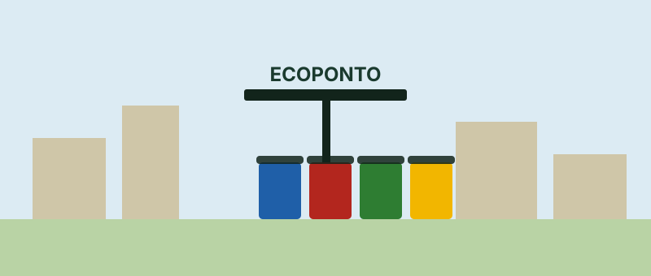

Praia Grande enfrenta desafios com o descarte irregular de resíduos
Mesmo com 24 ecopontos espalhados pelos bairros, a cidade registrou 978 pontos de descarte irregular.

Praia Grande possui uma estrutura voltada para a coleta e a destinação adequada de resíduos, mas o descarte irregular ainda representa um desafio para o município.
De acordo com informações divulgadas pela Prefeitura, a cidade conta atualmente com 24 ecopontos, além dos serviços de coleta domiciliar, coleta seletiva e Rapa-Treco.
Os ecopontos estão distribuídos pelos bairros e recebem materiais como vidro, plástico, papel, metal e madeira. Também são aceitos itens como pilhas, óleo de cozinha e pequenas quantidades de entulho de construção civil.
30% do material coletado poderia ser reciclado
Uma estimativa da Secretaria de Serviços Urbanos indica que aproximadamente 30% do volume coletado poderia ser reciclado caso a estrutura disponível fosse utilizada corretamente pela população.
O dado mostra a importância da separação dos resíduos e do conhecimento sobre os locais adequados para realizar o descarte.
Número de pontos de descarte irregular aumenta
O problema também aparece no levantamento dos chamados pontos críticos de descarte irregular.
Segundo a Prefeitura, um levantamento realizado entre fevereiro e março de 2026 identificou 978 pontos de descarte irregular. No levantamento do ano anterior, eram 750 pontos.
Além dos impactos ambientais, o descarte irregular pode contribuir para a proliferação de insetos, o entupimento da rede de drenagem e o aumento dos gastos públicos com limpeza urbana.
A importância da participação da população
Para enfrentar o problema, a Prefeitura instituiu em maio de 2026 uma política municipal voltada à identificação e à prevenção de pontos de descarte irregular.
A iniciativa prevê o mapeamento desses locais e busca incentivar a participação da comunidade na preservação dos espaços públicos.
Nesse cenário, o acesso à informação se torna uma ferramenta importante. Saber onde estão os pontos de coleta e quais materiais cada local recebe pode facilitar o descarte correto e contribuir para uma cidade mais limpa.
Reciclar começa perto de você.
Fonte: Prefeitura de Praia Grande, Secretaria de Serviços Urbanos. Notícia publicada em 04/09/2026.